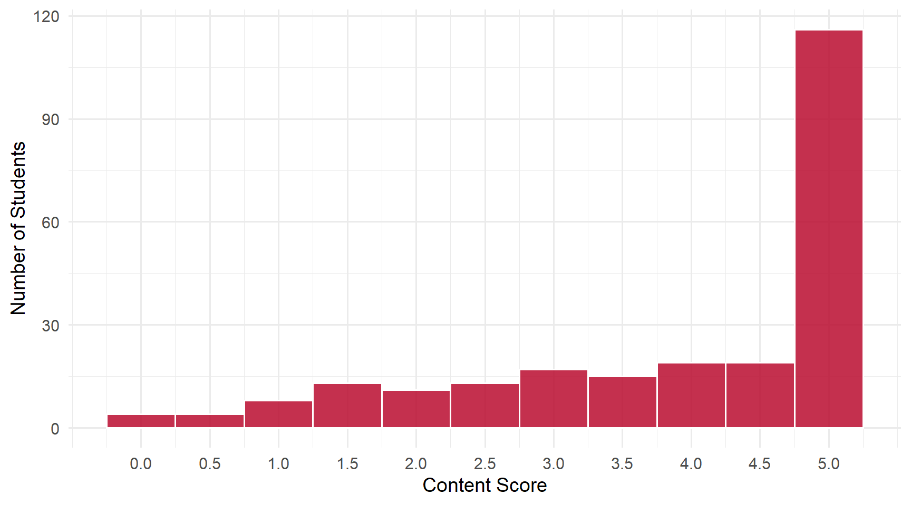
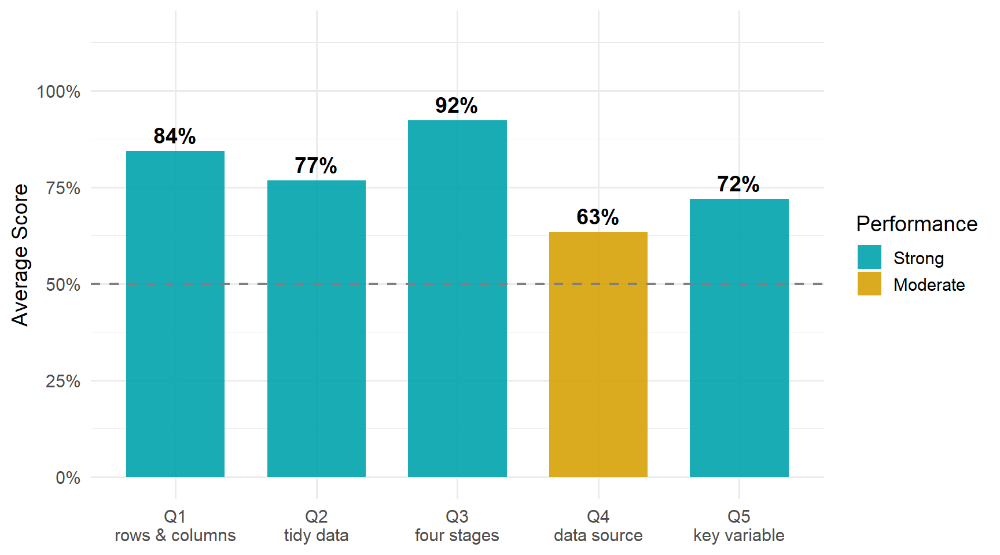

9 Daily 02 — Aug 25
9.1 Class Performance
Students: 239 | Content mean: 3.89 / 5 | Median: 4.5 | SD: 1.42 | Mean daily score: 9.55 / 10
Content scores ranged from 0 to 5 out of 5. (Your daily score adds the 8-point attendance credit for submitting; each question is worth 0.4 of the remaining 2 points.)
This daily split cleanly into two halves. The three definitional questions — what a table holds, what makes data tidy, the four stages — were answered well. The two questions that asked you to recall something specific from the reading were not. That pattern is worth more attention than any single wrong answer.
9.2 Score Distribution
9.3 Performance by Question

9.4 Questions
9.4.1 Q1: A data table is made up of rows containing ___ and columns containing ___.
TipCorrect Answer
Rows contain observations; columns contain variables. The database vocabulary works too: rows are records, columns are fields. What matters is which term goes in which blank.
WarningCommon Errors
- Reversing the pair — “variables, observations” or “fields, records.” This was the single most common error on the question, and both graders flagged it independently. You know the vocabulary; what is not yet automatic is which direction a table runs. It earned partial credit because both terms are there.
- Only the column half right — “variables” in the second blank paired with a vague first blank: “data,” “numbers,” “information,” “people,” “subjects,” “categories.” The column term is the easier one to remember; the row term is the one to drill.
- Cell-level words in the row blank — “values,” “data points.” A cell holds a value; a row holds a whole observation made of many values.
- Regression vocabulary intruding — “dependent variables, independent variables.” That is a distinction among columns, not a description of rows versus columns.
- Restating the question — “rows and columns.”
Mixing the two valid vocabulary families is not an error: “observations, fields” is fully correct, because each term still lands in the right blank.
9.4.2 Q2: Data are tidy if each variable corresponds to a , each row an , and each cell a ___.
TipCorrect Answer
Each variable is a column, each row is an observation, and each cell is a single value.
WarningCommon Errors
- “Single variable” in the third blank. This was by a wide margin the most frequent single error on the daily. The first two slots were often exactly right, and then variable appeared where value belongs. A variable is a whole column; a value is one entry in it. If you take one correction from this question, take that distinction.
- The second blank — “variable,” “ID,” “identity,” “category,” “field,” or “row” restating the prompt, instead of observation or record.
- Shifting the whole triple by one slot — writing “observation, variable, value,” so the column answer disappears and every term sits one position early. This is the same slot-mapping problem as Q1, applied to three blanks instead of two.
- Partial triples — one or two terms supplied and the rest left blank. Q2 had a noticeably higher blank rate than Q1 or Q3.
Accepted for the third blank alongside “single value”: value, data point, specific value, numerical value, entry.
9.4.3 Q3: We distinguish 4 stages of data analysis. Name them.
TipCorrect Answer
Acquisition, Transformation, Analysis, Communication — or the verb forms, acquire, transform, analyze, communicate. The mnemonic is ATAC.
WarningCommon Errors
- The acronym alone. “ATAC” written with no stage names was the most common partial answer. The mnemonic stuck; the words it stands for did not. A mnemonic you cannot unpack is not yet knowledge.
- Substituting the fourth stage — “conclusion,” “calculate,” “record,” “connect,” “convey,” “graph” in place of communicate. This was the stage most often lost.
- Substituting the second stage — “transcribe,” “transfer,” “translate,” “transition,” “categorization,” “organize” in place of transform. The “trans-” prefix is doing a lot of work here.
- A different framework entirely — “descriptive, diagnostic, predictive, prescriptive,” or the ask/prepare/process/analyze cycle, or “formulate a question, collect data, analyze, conclude.” These are real frameworks; they are just not the four stages from this course.
Listing all four out of order is not an error — the question asked you to name them, not to sequence them.
9.4.4 Q4: Card obtained the data from the ___.
TipCorrect Answer
The National Longitudinal Survey of Young Men (NLSYM).
WarningCommon Errors
- Naming a different well-known data source — “Census” (often with a year), “CPS,” “Bureau of Labor Statistics,” “National Bureau of Economic Research.” These are plausible guesses that reach for a familiar federal source rather than the one in the reading.
- A container or a tool instead of a survey — “library,” “dataset,” “data table,” “CSV,” “sheet,” “file,” “tidyverse.” The question asks who collected the data, not where it sits once you have loaded it.
- A scrambled acronym — NLYSM, NYLSM, NYMSL, NLPYM, MLSYA. The five letters were recalled; the order was not. Where all five letters are present the survey is still identifiable, so those answers earned full credit — but the scrambling is the tell.
- Partial recall — “National Longitudinal Survey” or “NLS” with “of Young Men” dropped, or “young men” with no NLS.
- A confident wrong expansion — “national league of young men.”
ImportantWorth Your Attention
This was the weakest question on the daily: 63% average, with about a third of the class earning nothing.
The diagnosis is visible in the wrong answers. Most students who remembered anything remembered five letters in roughly the right neighborhood — which is what happens when you memorize an acronym instead of a phrase. An acronym gives you nothing to reconstruct the order from when recall gets shaky. The phrase does: National Longitudinal Survey of Young Men. It is a survey, it follows the same people over time, and the people are young men. Learn the sentence and the initials come free.
9.4.5 Q5: The key variable in the data set is ___.
TipCorrect Answer
id. The key is the column that uniquely identifies each observation.
WarningCommon Errors
- Describing the variable instead of naming it — “identifier,” “person identifier,” “identification,” “a variable that serves as an identifier.” This was the dominant miss, and it is a frustrating one: these answers show you understand exactly what a key does. The question asked which variable it is.
- Naming a substantive variable instead — “wage,” “education,” “educ,” “race,” “gender,” “earnings.” Those are columns in the data; the key is the column that tells one row apart from another.
- A generic database word — “key,” “keystone,” “index,” “unique,” “row.” The first of those restates the question.
Answers that gave “id” alongside a gloss — “id = identification,” “the person identifier (ID)” — were correct. The failure mode was giving only the gloss.
NoteA note on this question
Q5 was graded all-or-nothing: there was no half-credit tier. That is why its scores are only 1 or 0 while every other question on the daily has a middle band.
9.5 What the Class Did Well
The four stages are solid — 92%, the best result on the daily. ATAC landed, and most students could produce all four names in either noun or verb form.
Rows and columns are mostly there — 84%. Where the question was missed, it was almost never because the vocabulary was unknown. It was the mapping.
Where credit was lost on Q1 and Q2, it was usually one slot away, not one concept away. That is a much easier gap to close than a missing idea.
9.6 What to Review
- Which way a table runs. Rows are observations, columns are variables. Q1 and Q2 fail together in a recognizable way: students who reverse the pair on Q1 tend to rotate the triple on Q2. That is one misconception showing up twice, not two separate problems — fix it once and both questions improve.
- Variable versus value. A variable is a whole column. A value is a single cell. This was the most common single error on the daily.
- The data source, as a phrase. National Longitudinal Survey of Young Men — not five letters in an uncertain order.
- The key variable is
id. Naming it is the answer; describing it is not. - The two recall questions were the two that hurt. Blank and “I don’t know” answers clustered on Q4 and Q5 — the items that came from the reading rather than from lecture definitions. The definitional material is landing; the reading is where the gap is.
NoteHow this was graded
Every paper was scored twice, independently, against the same published rubric, by graders who could not see each other’s scores or your name. The two passes agreed on 97% of all scores; every disagreement was reviewed a third time against the rubric and settled with a written reason. Submitting the daily earns 8 of 10 regardless of content.